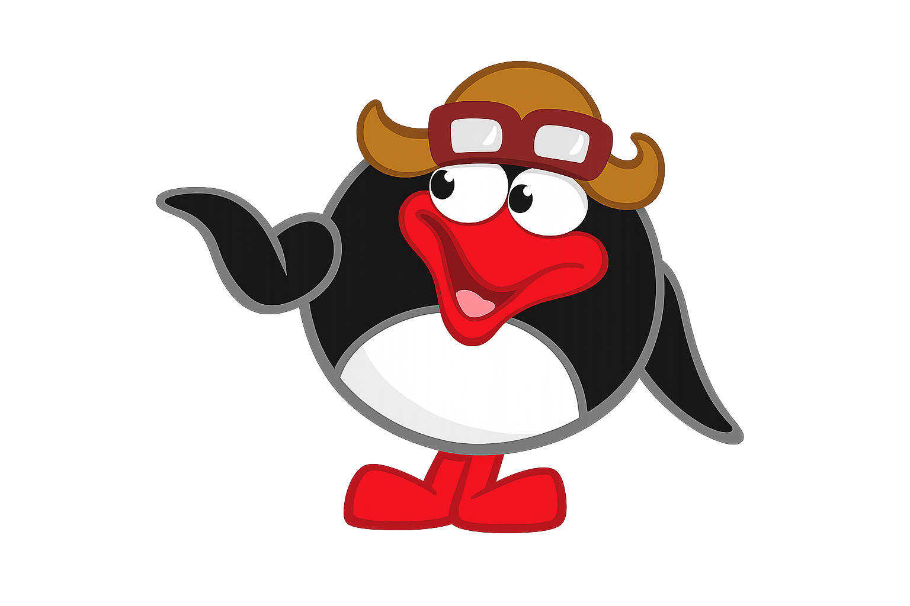
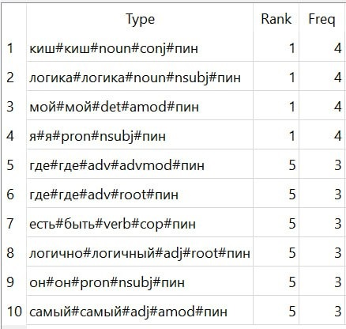

Общие результаты
|
 |
В виде: словоформа # лемма # часть речи # синтаксическая роль # персонаж  |
Токенов всего в корпусе: 4912
Токенов персонажа в корпусе: 284 (5,8%)
Наиболее частотная лексема: "где"